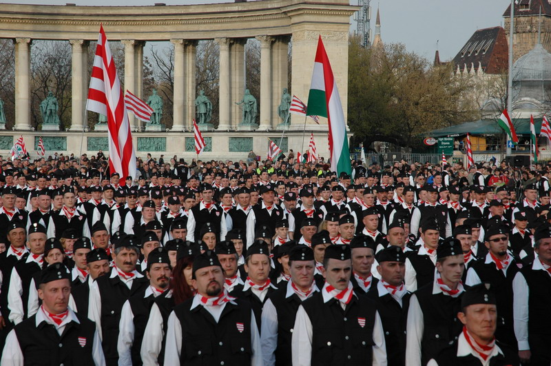

Mi értelme a Magyar Gárdának? – kérdezik tőlem
egyre gyakrabban, én pedig nem győzöm magyarázni. Ezért írtam ezt a cikket.
A Magyar Gárda
megalakulása óta rengeteg pofont kapott, jobbról, balról, gyakorlatilag mindenhonnan támadások
érték, és nemrég Orbán Viktor is
beígért párat.
A Magyar Gárdát
kritizálóknak két népes tábora van. Az egyik a magyarellenesek tábora, mely szerint a Magyar Gárda
félelemkeltő, szélsőséges, erőszakos. A másik pedig a „szélsőségesek” tábora
(hungaristák, nemzetiszocialisták, skinheadek, stb..) akik szerint pedig a Magyar Gárda értelmetlen,
mert nem elég szélsőséges.
Szélsőséges helyzetben szélsőséges megoldás szükségeltetik, s ők
úgy látják, a Magyar Gárda nem elég erős, és nem elég határozott ahhoz, hogy valódi megoldást
nyújtson.
Tehát mi értelme a Magyar Gárdának?
Ahogy Tomcat nagyszerűen megfogalmazta,
a Magyar Gárda egy súlyos betegség tünete. Azé a betegségé, ami évek, évtizedek óta kínozza
országunkat. A Magyar Gárda egy nyilvánvaló jele annak, hogy itt valami nagyon nincs rendben. Nagyon
nincs rendben, hogy a MAGYAR rendőrség nem képes ellátni alapvető feladatait, azaz megvédeni a
MAGYAR lakosságot, az egyre erősödő cigánybűnözéstől. A Magyar Gárda reakció is egyben, a nemzeti
összetartás tudatos rombolására, a nemzeti értékek (és érdekek) sárba tiprására. A Magyar Gárda
felhúzott egy zászlót, mely alatt a magyarok összegyűlhetnek, és megmutathatják, össze tudnak még
fogni.
A Magyar Gárda CÉLPONT is egyben.
Ügyes csapda volt ez, hogy leleplezhessük
nemzetünk ellenségeit. Felhúztuk a zászlót – méghozzá nemzetünk zászlaját – és tisztán
láttuk kik azok, akik megpróbálják letépni. És míg ők veszettük rágták, rúgták, hajlították a
zászlórudat, mi megmutattuk a népnek, - látjátok, ők a mi ellenségeink.
Az MSZP-ről és az
SZDSZ-ről nyilvánvaló volt, hogy ellenség, azonban így még a magát nemzetinek mondó FIDESZ-ről is
kiderült mifélék ők valójában. Ők maguk bizonyították be azt, amit mi már régóta mondogatunk a
narancssárga birkáknak.
Lebuktak ezek az úgynevezett antifasiszták is, akikről
bebizonyosodott az, amit mi nyitott szemmel élő emberek már régen tudtunk, hogy ők nem a fasizmus,
vagy a nemzetiszocializmus, hanem az egészséges nemzettudat és a REND ellenségei.
Velük
együtt lelepleződött az összes többi féreg is, mely alantas módon azt hirdette, ő csupán a
rasszizmust, fajgyűlöletet, kirekesztést ellenzi. Aki eddig gyanús volt, az mostantól fogva minden
tisztességes magyar ember számára egyértelműen ellenség.
Mint mondottam, a
„szélsőjobbról” is számos támadás érte a Gárdát, mert az nem elég hatékony. Ránéz az
ostoba skinhead a Magyar Gárdára, és azt mondja: „Hát ezek nem akasztottak fel még egy cigányt
se, ráadásul horogkeresztjük sincsen. Akkor mi értelme?”. Az a baj ezekkel az emberekkel,
hogy képtelenek öt percnél tovább gondolkodni, és fogalmuk sincs mit jelent a taktika. Fehér
Magyarországról és akasztásokról álmodoznak, de fogalmuk sincs, hogyan érhetnénk ezt el. Arról
álmodoznak, hogy egyszer csak, bármiféle előzmény nélkül, hirtelen lesz százezer igazmagyar
fenegyerek, akik mind fegyvert fognak (honnan?) és lelövöldöznek mindenkit, aki nem velük van.
Álomnak szép, én is szoktam ilyenekről fantáziálni, de ez nem fog csak úgy bekövetkezni. Ezért tenni
kell. És ezek a magukat „nácinak” nevező ostoba bőrfejűek azok, akik ezért a
legkevesebbet sem tesznek. (Tisztelet a kivételnek természetesen.)
Hogy miért nem
nemzetiszocialista a Magyar Gárda? Mert úgy elveszne a lényege. Nekünk Árpád-sávos és
Piros-fehér-zöld céltábla kellett, nem horogkeresztes. Mi a magyar nemzet ellenségeit akartuk
leleplezni, nem a horogkereszt ellenségeit (azokat ugyanis már rég ismerjük).
Tökéletes
példája a magyar nemzet ellenségeinek taktikájára, harcmodorára, céljára, ahogy mind nekiestek a
Gárdának, mikor az még meg sem alakult, és céljairól semmit sem tudtak. Láthattuk, hogy ők valójában
nem FÉLNEK, hanem GYŰLÖLNEK. Mindent, ami magyar. Ezért kellett a Gárdának elhatárolódnia a
nemzetiszocialistáktól, mert ez csak így működött. A Gárda többször is világosan kifejtette hogy sem
a fasizmushoz, sem a nemzetiszocializmushoz nincs köze, és erőszakot sem kíván alkalmazni a
jövőben. Ellenségeink mégis ezekkel támadták, ezzel bebizonyítva a nagy nyilvánosságnak is, hogy
ők mindenre ezeket a „szitokszavakat” kiáltják, amit gyűlölnek. Az antiszemitizmus (és
természtesen a fasizmus, nemzetiszocializmus, rasszizmus, etc.) vádja a leghatékonyabb politikai
fegyver, és ennek a fegyvernek a hatástalanításáért tett sokat a Magyar Gárda.
De az efféle
taktikai lépéseket sajnos rengetegen nem értik az NS oldalon, és egyszerűen elkönyvelik az egész
nemzeti radikális oldalt mérsékelt birkáknak, aztán jól el is határolódnak, pedig nem hinném, hogy
valaha is elküldtek volna bárkit nemzeti radikális, jobbikos, vagy bombagyáros rendezvényről,
azért mert nemzetiszocialista. Értsétek meg, hogy az efféle taktikázásra sajnos szükség van.
Rendet kell tenni a fejekben is, ehhez pedig nyilvánosság kell. Nekünk pedig nincsenek saját TV
adóink, saját milliós példányszámban gyártott újságaink. Gondolkozzatok egy kicsit, hány
nemzetiszocialistát láttatok az elmúlt időben, a tv-ben? Hány nemzetiszocialista fejthette ki
nézeteit milliók előtt? Egy sem. Sokszor teljesen egyetértünk, csak mi karlengetés nélkül mondjuk
el, és így milliók hallhatják, nem csupán pár száz ember. Értitek már? Túlzás lenne azt mondanom,
hogy céljaink azonosak, de mindannyian sokat tettünk már az igazságért, és mindannyian rengeteg
áldozatot hoztunk. Az igazság győzelme pedig mindannyiunk érdeke. És ehhez a győzelemhez nem
minden osztagnak ugyanazon az úton kell haladnia. Most még nem. Ahogy változnak majd az idők,
változni fognak az eszközök is, mindig azt használjuk, ami hatásos. Így működik
ez.
Nemzetiszocialistáktól gyakran hallani még, hogy azért káros a Magyar Gárda, mert
elvonja az emberanyagot a komolyabb szervezetektől. Érdekes ez, ugyanis egy nemzetiszocialistának
illene tudnia, hogy van Magyarországon valódi nemzetiszocialista félkatonai szervezet, de oda nem
kerülhet be akárki. A Magyar Gárdából talán pár tucat ember lenne csak alkalmas arra, hogy ennek a
szervezetnek tagja legyen, tehát nem igaz, hogy a Magyar Gárda elvonja az erőt a komolyabb
szervezetektől.
Itt megemlíteném, mennyire vicces az, hogy nemzetünk ellenségei a Magyar
Gárdára, mint náci, félkatonai szervezetre hivatkoznak. Ilyenkor kedvem lenne megmutatni nekik,
hogy milyen egy igazi nemzetiszocialista félkatonai szervezet, tudjátok, ahol elit katonai
kiképzést kapnak, és fegyvereket, de a felsőbb körök tudják nagyon jól, hogy létezik ilyen. Hogy
miért nem riogatnak akkor azzal? Mert attól valóban félnek. Mocskosul rettegnek tőle, hogy ha
egyszer is bemutatják tv-ben, több százan, vagy akár több ezren akarnak majd csatlakozni. És ez
bizony nem egy békés zászlólengető alakulat. Ők mást csinálnak. Szükség van rájuk is, és a Magyar
Gárdára is. Ez a két szervezet teljesen más feladatokat lát el. De már így is túl sokat mondtam,
pedig semmiféle felhatalmazásom nincsen rá.
A Gárda egyben egy jelzés is, az egyre nagyobb
problémát jelentő cigányság számára. Megmutatja, hogy bizony össze tudnak fogni a magyarok is, és
bár egyelőre csak menetelnek, az a majdnem ezer ember le is tud csapni keményen, ha eljön az
ideje.
A Gárda egyben egy jelzés is, a még mindig középen támolygó magyarság számára.
Dönteni kell, hamarosan itt az idő. Velünk vagy ellenünk. Jobb vagy bal. Vége a
tétovázásnak!
Nem szabadna tehát a Gárdistákat olyan keményen bírálni. Ők – ha nem is
sokat – de tesznek a hazáért, ellenben számos kritizálójukkal, kiknek
„tevékenysége” a koncertre járásban és a részegen karlengetésben merül ki.
És
idővel, ahogy változik a helyzet, úgy változik majd a Gárda is. Én ebben biztos vagyok. Mert a
Magyar Gárda egy válasz. Ha változik a helyzet, változni fog a rá adott válasz is.
A Magyar
Gárda tehát egy ügyes kis csapda, mellyel leleplezhettük, kik a magyarság ellenségei.
A
Magyar Gárda tehát egy eszköz, ahhoz hogy nagy tömegeket szólíthassunk meg.
A Magyar Gárda
tehát egy jelzés, mely világosan jelzi, hogy itt semmi sincs rendben.
A Magyar Gárda tehát
egy fegyver, mely még nincs csőre töltve.
A Magyar Gárdára tehát szükség van. Fontos állomás
ez a győzelemhez vezető úton.
Több megbecsülést a Magyar Gárdának! Több tiszteletet
a Gárdistáknak!
Ők tesznek a Szebb Jövőért!
És Te, teszel?